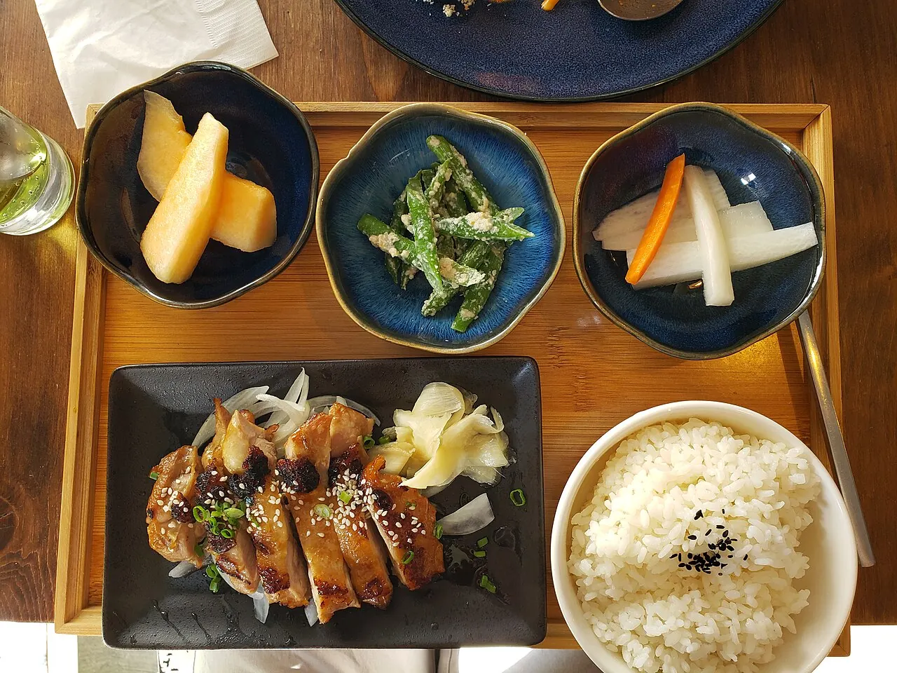
朝凪駅から4分の、定食と珈琲の食堂
日替わり定食は980円、11時から。食後の珈琲は店で焙煎しています。水曜定休。
電話で席を予約する
0000-00-0000受付 10:00〜21:00
営業時間と場所
朝凪市港町2丁目0-0
朝凪駅 東口から徒歩4分
| 月・火・木・金 | 11:00〜15:00（L.O. 14:30） 喫茶は17:00まで |
|---|---|
| 土・日・祝 | 11:00〜16:00（L.O. 15:30） 喫茶は17:00まで |
| 定休日 | 水曜、第3木曜 |
- 席
- カウンター4席、テーブル14席。全席禁煙
- 支払い
- 現金、PayPay、交通系IC
- 駐車場
- 店の横に3台
- お休みの知らせ
- 臨時休業は前日までにInstagramでお知らせします
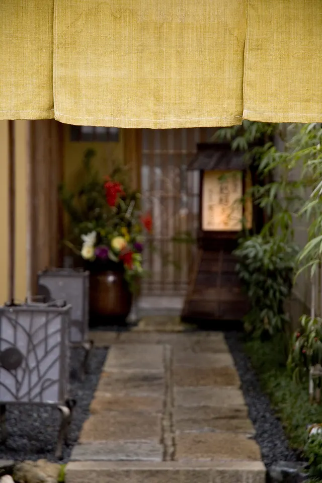
自家焙煎の珈琲
週に2回、火曜と金曜の朝に店の小さな焙煎機で焼いています。
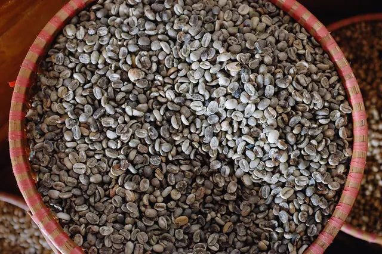
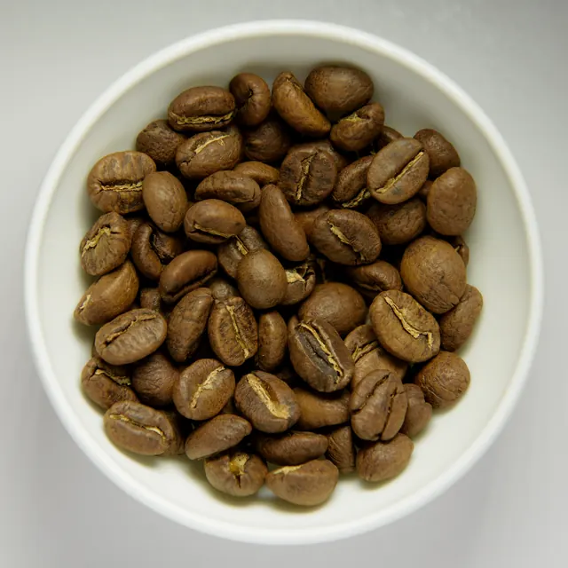
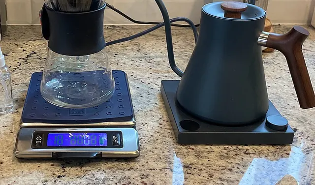
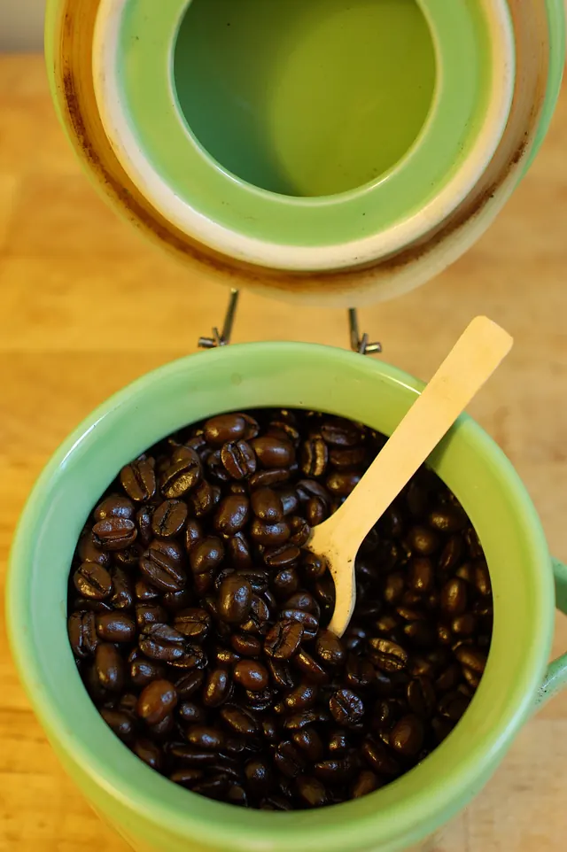
飲みもの
- 朝凪ブレンド定食と一緒なら280円480円
- 深煎りブレンド520円
- カフェオレ550円
- ほうじ茶380円
豆の販売（100g）
- 朝凪ブレンド（中煎り）780円
- 深煎りブレンド800円
- 季節の豆900円〜
焙煎日のこと
豆は焼いてから3日ほどで味が落ち着きます。袋に焙煎日を書いていますので、飲みごろの目安にしてください。挽いてお渡しもできます。
店のこと
毎日来ても飽きない、ふつうの定食を。
港町で2019年に始めた、夫婦ふたりの店です。お米は隣町の農家さんから玄米で仕入れ、店で精米して土鍋で炊いています。味噌は毎年2月に店で仕込み、1年置いたものを使います。
小さなお子さま用の椅子と取り分け用の器があります。お声がけください。
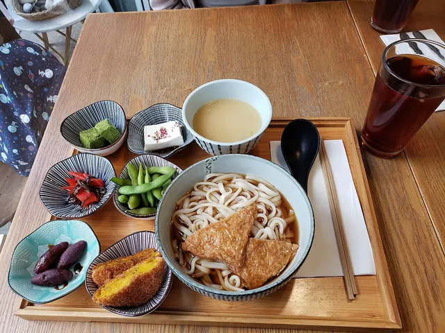
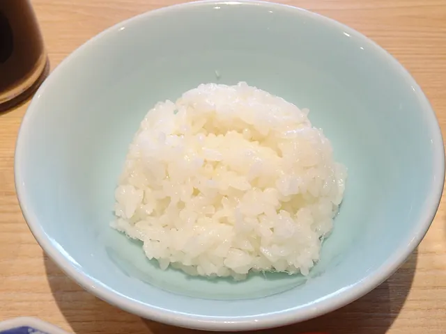
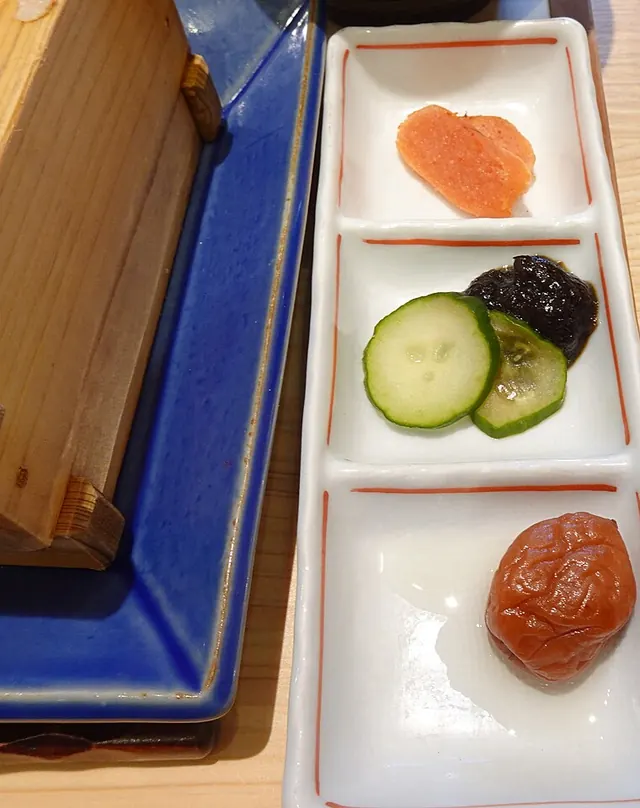
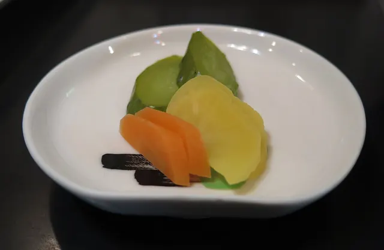
道順
朝凪市港町2丁目0-0
- 朝凪駅の東口を出て、港通りをまっすぐ海のほうへ。
- 3つ目の信号、郵便局の角を左へ。
- 40mほど先、右手の白い暖簾が当店です。
- 車
- 店の横に3台。満車のときは港町第2駐車場（30分100円）をご利用ください
- 自転車
- 店の前に置けます
ご予約
0000-00-0000- 受付は10:00〜21:00。水曜はお休みです。
- ご予約はテーブル席、2〜6名さまで承ります。
- 貸し切りは土日の15時以降に、12名さままで。
平日の11:30〜13:00は混み合うため、ご予約をお受けしていません。
電話で席を予約する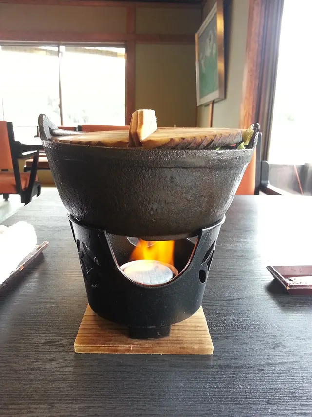